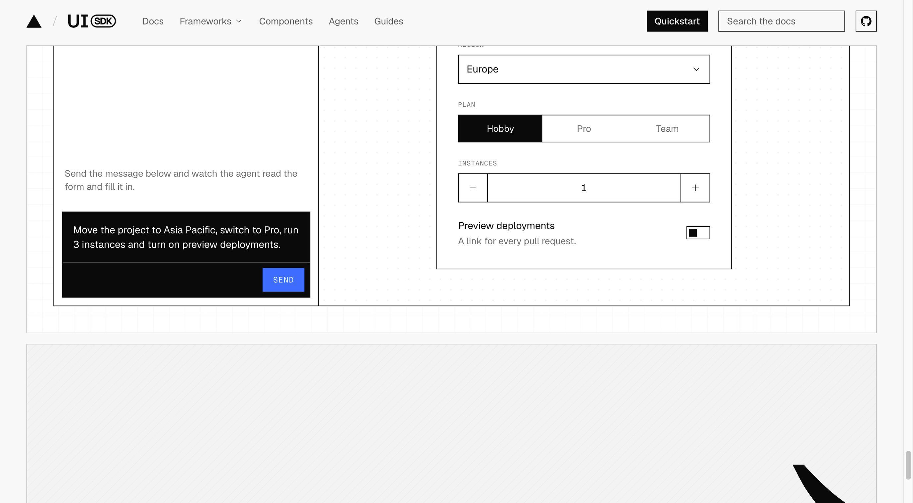

闭环
07 / 08
结果能自动校验，
界面能被 Agent 操作
@ui-sdk/core/testing
按 WAI-ARIA 模式逐项核对生成结果，
RTL（从右到左）和 SSR
也在检查范围内。
@ui-sdk/core/agent
snapshot
抓界面快照，
act
直接操作控件——
不用截图
。官网自测：比看截图快 2 倍以上，成本不到一半。

官网演示：Agent 读页面、直接把表单填对，不靠截图。
SOMEONE ONCE SAID